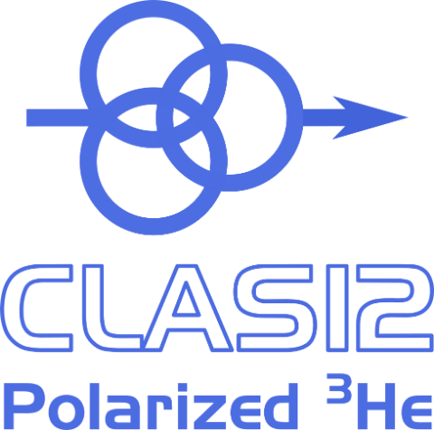

Choose a run
Each event file is one run, and each line in it is one current scan with the two-peak fit that was stored alongside it. Pick a run on the left to plot its scans.
Over time
Tick runs in the list to add them to this plot. Click a point to open that scan below; the dashed rule marks the one open.
Scan
Drag across a plot to zoom and double-click to reset; click a name in the legend to hide that trace.
Fit
| Parameter | Value | ±1σ |
|---|
Scan points
| # | Current | Signal | Fit | Peak 1 | Peak 2 | Baseline | Residual |
|---|